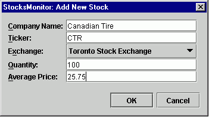

Create New Portfolio
Portfolios are simply sets of stocks which are assigned a unique name.
Create a new portfolio and assign its name
Select File->New, and assign a unique name to the new portfolio.
Add stocks to the portfolio
-
select Edit->Portfolio
-
click the Add button and enter data
-
tooltips describe valid entries for each field
-
note that Quantity and Average Price may be left blank
Example of a valid entry of a new stock :

The Yahoo symbol for this stock is CTR.TO. Note that the ticker
field is input as CTR. StocksMonitor adds the correct suffix internally
(.TO, in this case, corresponding to the Toronto Stock Exchange),
using the entry in the Exchange field. Thus, the user does not need to
remember these suffixes.
Average Price
Example :
-
100 shares are bought at 5.00
-
another 100 shares are bought at 10.00
Then the full 200 shares has an average price of 7.50.
Save your work
-
select File->Save to save the edits
-
whenever there are unsaved edits, a * character appears at the end of the
Portfolio name